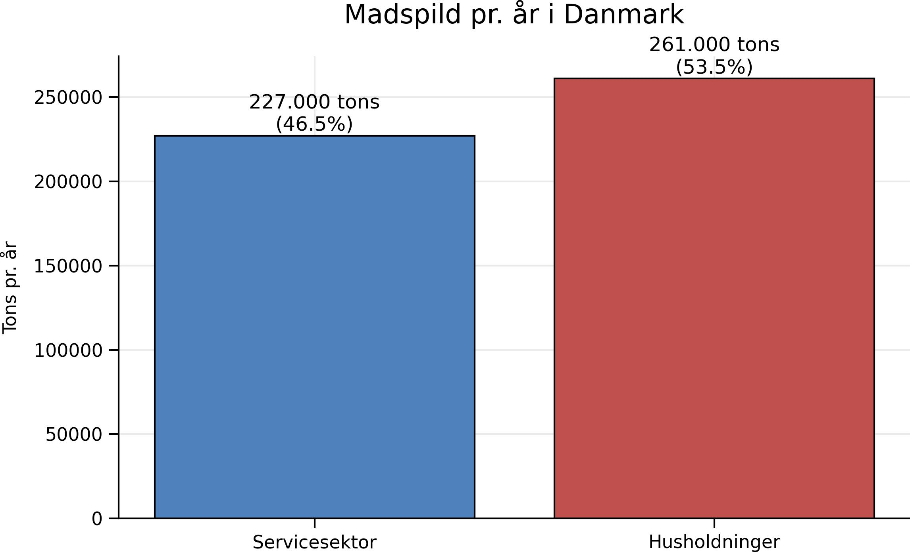
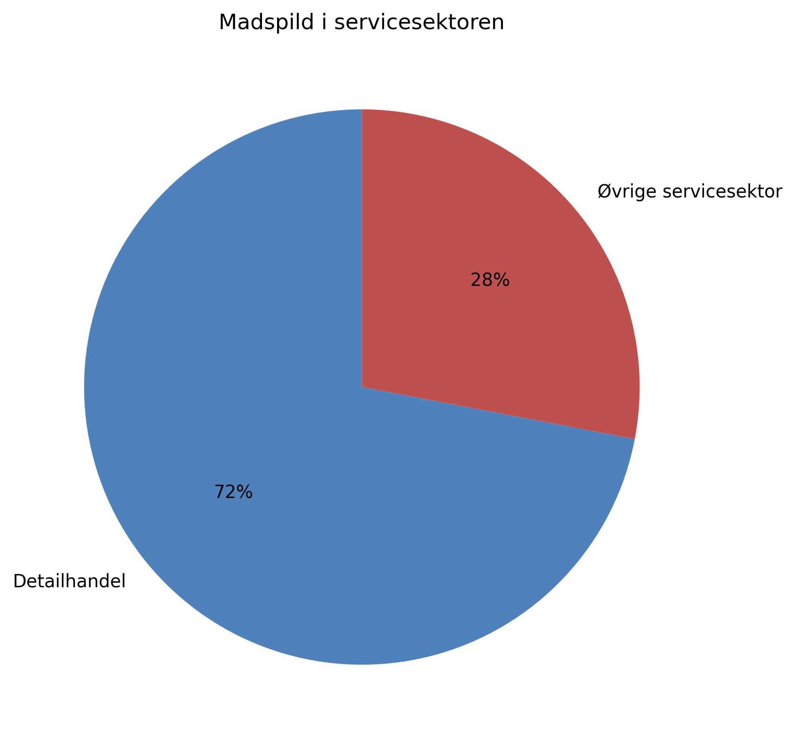
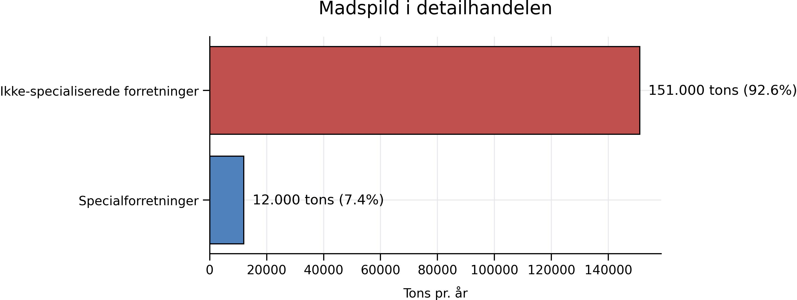

Madspildet i den danske servicesektor udgør 227.000-ton pr. år. Til sammenligning er det samlede madspild fra husholdningerne 261.000-ton pr. år.
Viden om madspild

Det største madspild i servicesektoren stammer fra detailhandelen, der spilder 163.000 tons pr. år, svarende til 72 % af servicesektorens madspild

Af detailhandelens madspild står specialforretninger som slagtere, fiskeforretninger og grønthandlere for 12.000 tons pr. år, mens ikke-specialiserede forretninger som kiosker, købmænd, supermarkeder og varehuse står for 151.000- ton pr. år.
